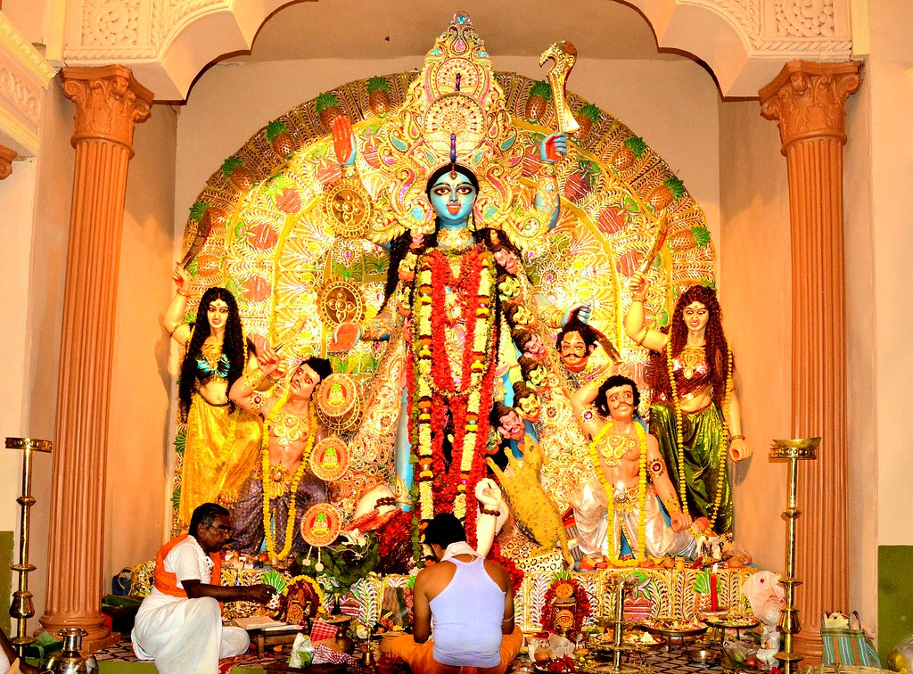

KALI PUJA

Kali Puja , also known as Shyama Puja or Mahanisha Puja, is a festival dedicated to the Hindu goddess Kali, celebrated on the new moon day of the Hindu month Kartik especially in Bengal, Odisha,Bihar and Assam. It coincides with the pan-Indian Lakshmi Puja day of Diwali. While the Bengalis, Odias and Assamese adore goddess Kali on this day the rest of India worships goddess Lakshmi on Diwali. Mahanisha puja is performed by the Maithili people of Mithila region in India and Nepal.